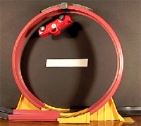

In this activity a Tracker model is compared with a toy truck attempting to drive up and around a Hot Wheels vertical loop track. Three different videos show the truck entering the loop at different speeds.

The zip file includes all three videos and pdf instructions.